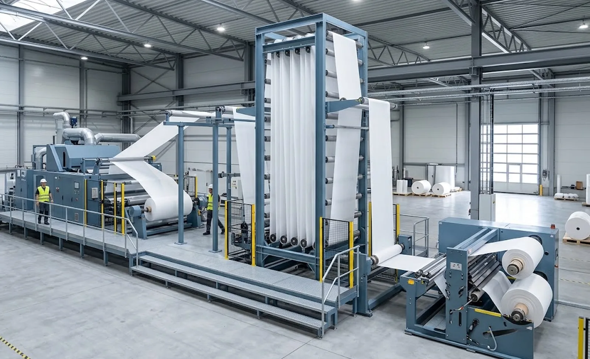
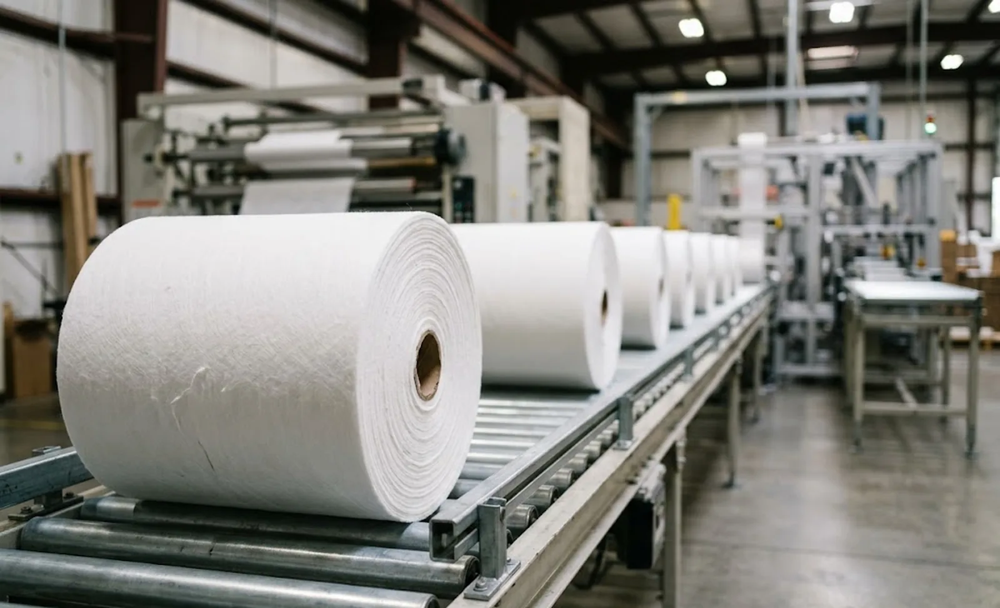

Published September 30, 2026 | By HDPTH Technical Editorial Team

A surprising share of slitter rewinder disappointments have nothing to do with the rewinder. The machine meets its specification in isolation, but the line around it runs slower than planned: the upstream process surges and breaks tension at every speed change, the accumulator was sized by eye, the finished rolls pile up faster than downstream handling can clear them, and two suppliers point at each other across an interface nobody owns.
The upstream interface: what the rewinder inherits
When web arrives from a continuous process — an extruder, a spunlace or thermal-bonding line, a coater or printer — the slitter rewinder does not control its own destiny at the infeed. Specify these four items explicitly with the upstream supplier and the rewinder builder together:
- Entry geometry: web position, height, angle and the realistic lateral drift range. The rewinder’s web guiding must be positioned and sized for the drift the upstream actually produces, not a nominal centreline.
- Speed profile: maximum speed, acceleration rates, surge behaviour at process events (doffing, batch changes). The rewinder’s tension zones must track this profile, and its pull train must hold control during upstream acceleration, not just steady running.
- Web condition at handoff: width, temperature, moisture content, static charge and edge quality all differ between “as-produced” and “as-stored” material, and each shifts the tension and static-control requirements.
- Control platform and signal list: which PLC, which fieldbus, and which signals flow in each direction.
Where the upstream runs continuously and the rewinder must stop for splicing or roll change, the answer is an accumulator. Size it for the longest downstream stop at full line speed plus margin — a turret index plus splice typically needs 15 to 60 seconds of storage — and treat its tension behaviour as part of the tension zone architecture.
The downstream interface: rolls, cores and data out
At the other end, the constraint is usually people and material flow, not mechanics. A rewinder discharging a finished roll every 40 seconds will outrun any manual handling scheme; a line that looked economical on machine prices then hires three extra operators to ferry rolls. Specify the discharge in the same document as the slitting itself:
- Roll discharge height and direction — matched to the conveyor, pallet position or roll unloading system that follows, not the other way round.
- Roll protection — whether wrapping and packaging happens inline or in a separate area, and who conveys rolls between the two.
- Data out — roll identity, length, quality flags travelling to labelling, palletising or the MES.

Write the responsibility matrix before the order
Every integrated line needs one page: a table listing each interface with a single named owner. The standard failure mode is two suppliers each proving their machine works standalone while the boundary between them stays nobody’s deliverable.
| Interface | Typical content | Owner must be named |
|---|---|---|
| Web path | Entry alignment, tension handoff, guiding coverage | Usually rewinder supplier, with upstream data supplied by buyer |
| Electrical | Power quality, interconnection cables, I/O signal list | One party; signal list is a contract document |
| Data | Speed references, production counters, alarm forwarding | Agreed protocol and owner before order |
| Safety | Emergency-stop chain, guards, stop categories, restart logic | Single owner for the integrated safety validation |
| Civil works | Foundations, cable routes, floor flatness between machines | Buyer, with layout drawings from suppliers |
The safety row deserves special emphasis: an integrated line must stop as one machine. Any emergency stop anywhere must bring every section to a coordinated stop per ISO 13850, and restart must be blocked until the cause is cleared. If the upstream and rewinder use different safety architectures, the joint concept — and the party who validates it — must be agreed during design.
Acceptance: test the interfaces, not just the machines
Each machine will pass its own FAT; the line needs interface tests too. Before shipment, the signal list and data link can be exercised at a joint FAT by simulating the partner machine, and recorded upstream speed profiles can be replayed into the rewinder’s drives to prove tension stability through acceleration. True coupled running with real web only happens on site, so structure the commissioning: alignment and signal checks first, then slow-speed threading, then stepwise ramping to the guaranteed speed with documented acceptance at each step.
Buying a rewinder for an existing line?
Send HDPTH your upstream process data — web width, speed profile, entry position and control platform. We will engineer the infeed interface and deliver a written signal list and responsibility matrix with the offer.
Submit Your Project InquiryQuestions to put to every vendor
- What upstream data do you need from us to engineer the infeed — and what assumptions will you document?
- Can you supply and size the accumulator, and guarantee tension stability at minimum storage?
- Will you agree a joint signal list and safety concept with our other supplier before order confirmation?
- Who owns the line-level speed and quality guarantee — and is that party contractually identified?
Planning a complete converting line?
Our guides on converting line layout and material flow and tension control and web guiding for nonwovens cover the surrounding decisions — or send your line concept for review.
Contact HDPTHFrequently asked questions
What does the slitter rewinder need to know about the upstream process?
Four things, in writing: the web’s entry position, height and lateral drift range so the unwind or infeed can be aligned; the upstream speed profile including accel rates and surge behaviour, because the rewinder must track or buffer it; the web properties at handoff — width, temperature, moisture, static charge and edge quality — which set tension and guiding requirements; and the upstream line’s control platform and signal list, so the electrical interface is designed rather than improvised on site.
Do we need a web accumulator between the upstream line and the slitter rewinder?
If the upstream process runs continuously — an extruder, a spunlace or calender line, a coater — then yes: the accumulator stores web while the rewinder stops to splice or change rolls, so the expensive upstream machine never slows. Size it for the longest downstream stop (a turret index plus splice, typically 15 to 60 seconds) at full line speed plus a margin, and specify it with the same care as the rewinder, because its tension behaviour at low storage is part of your tension zone architecture.
Who is responsible when an integrated line does not reach its guaranteed speed?
Whoever the responsibility matrix says — which is why the matrix must be written before purchase. Each interface gets one named owner: web path and tension handoff, electrical interconnection, data link, safety chain and civil works. The standard failure mode is two suppliers each proving their machine works standalone while the boundary between them — wrong entry height, mismatched signal levels, conflicting emergency-stop logic — remains nobody’s deliverable. Line-level performance guarantees should sit with the party contracted for line integration, and boundaries must be tested jointly at a defined protocol.
How should the safety chain work across an integrated line?
The whole line must behave as one safety system: any emergency stop anywhere must bring every section to a defined, coordinated stop category, and guards must prevent restart from any section until the cause is cleared. This requires a joint safety concept early — stop categories per ISO 13850, a common safety PLC or hardwired chain architecture, and a single party owning the integrated safety validation. Retrofitting safety logic between two machines with different architectures is among the most expensive integration work there is.
When should line integration be tested — at FAT or only on site?
As much as physically possible before shipment. Interface signals, data links and control logic can be exercised at a joint FAT by simulating the partner machine, and upstream-driven speed profiles can be replayed into the rewinder’s drives. True coupled running with real web can only happen on site, so plan a structured commissioning phase: first mechanical alignment and signal checks, then slow-speed web threading through the full line, then stepwise speed ramping to the guaranteed point. Lines that skip the simulated interface tests pay for the gap during commissioning, at full daily cost.
Sources
- ISO 13850: Emergency stop function — principles for coordinated stopping across integrated machinery
- EU Machinery Regulation (EU) 2023/1230: requirements for machinery assembled into a line and partly completed machinery
- IEC 60204-1: Electrical equipment of machines — interconnection and stop-function wiring between line sections
- ISO 12100: Risk assessment and risk reduction — the basis for the joint line safety concept